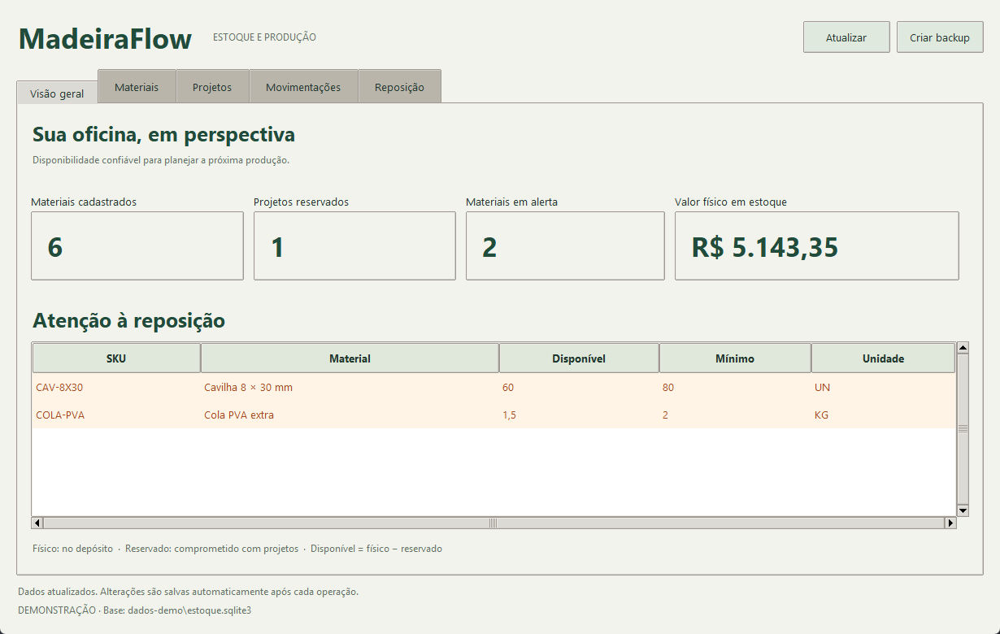
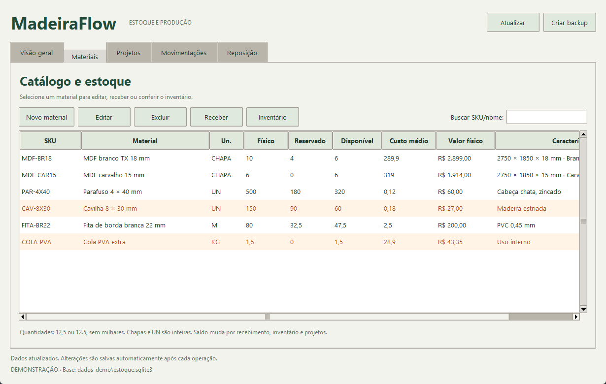
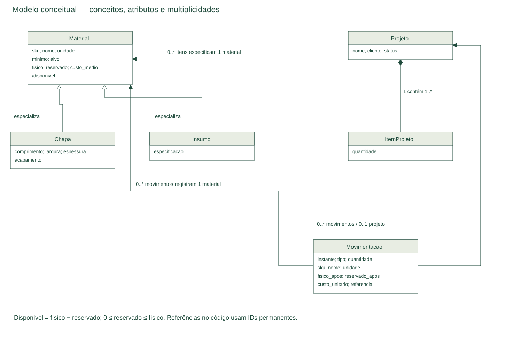
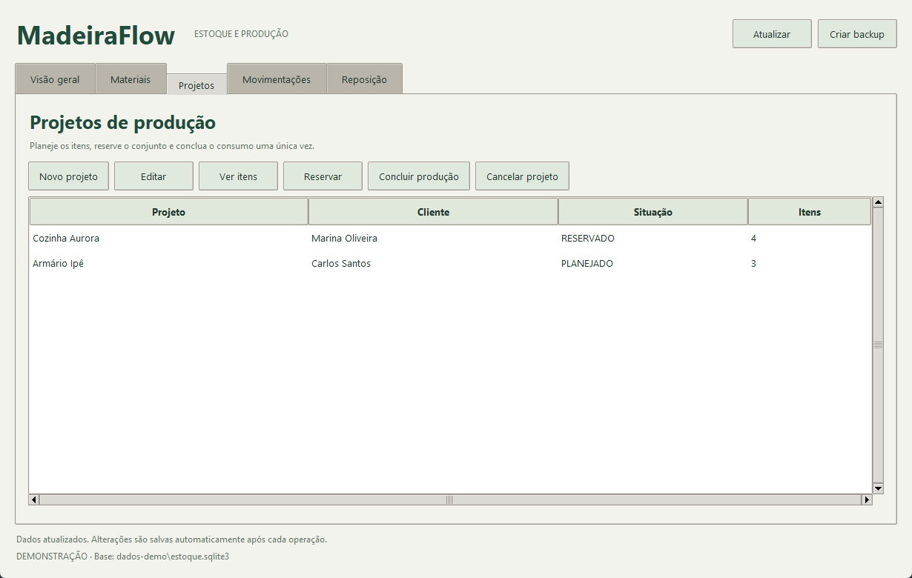
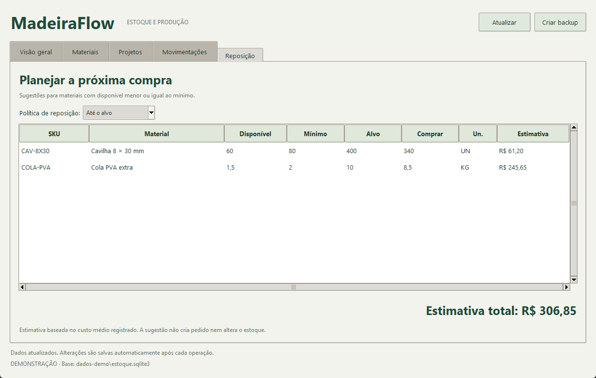

MadeiraFlow — apresentaçãoMADEIRAFLOW / APSOO / PYTHONMadeiraFlow
Estoque e produção para marcenarias
- Projeto final de Análise e Projeto de Software Orientado a Objetos
- Python · Tkinter · SQLite
- Gabriel Gonçalves de Assis Souza / 202307430544 · Matheus Mandarini de Menezes / 202407430511 · Matheus Henrique dos Santos Gomes / 202407430163 · Gabriel Richard Zambianchi de Oliveira / 2025.0743.013-0

Uma chapa pode já estar prometida
Problema e atores
- Saldo físico sozinho não informa o compromisso com encomendas.
- Estoquista recebe e confere; produção planeja e consome; gestor acompanha e repõe.
- Disponível = físico − reservado.

Comportamento além de CRUD
12 RF · 6 RNF · 12 regras
- Reserva de todos os itens ou de nenhum.
- Conclusão única; cancelamento libera sem alterar físico.
- Contagem nunca abaixo do reservado; custo médio ponderado.
Conceitos antes da tecnologia
Domínio e Information Expert
- Material conhece unidade, saldo e custo.
- Projeto conhece itens e ciclo de vida.
- ItemProjeto expressa quantidade; Movimentacao preserva o contexto.

Cada responsabilidade tem um lugar
Interface → Aplicação → Domínio
- Janela apresenta e coleta; serviços coordenam.
- Entidades imutáveis protegem regras e devolvem novas versões.
- Repositório confirma o conjunto; contratos permitem substituição.
Padrões com resultado observável
Strategy · Observer · injeção de dependências
- Strategy troca política mínima/alvo sem alterar ConsultaService.
- Observer mantém alertas e auditoria sem dependência concreta nos serviços.
- Observadores participam do snapshot; relógio e repositório são injetados.
Demo 1 — planejar e reservar
Ao vivo: Balcão Horizonte
- Base nova: MDF branco físico 10, reservado 4, disponível 6.
- Projeto: 1 MDF branco + 10 parafusos; PLANEJADO não altera saldos.
- Reservar → MDF 10 / 5 / 5. Conferir RESERVA e auditoria.

Demo 2 — concluir produção
Consumo integral e baixa única
- Concluir Balcão → MDF físico 9, reservado 4, disponível 5.
- Disponível não muda: o material já estava comprometido.
- Tentar concluir de novo → rejeição sem nova baixa.
Falhar sem deixar metade pronta
Reserva integral e transação
- Novo projeto: 1 MDF + 99999 cavilhas.
- A reserva rejeita a falta e preserva também a chapa.
- Snapshot isolado → regras → observers → validar → salvar por revisão.
Reposição usa o disponível
Uma escolha real do gestor
- Cavilha: disponível 60, mínimo 80 e alvo 400.
- Política mínima sugere 20; alvo sugere 340.
- Cancelar Cozinha Aurora libera 90 e remove o alerta de cavilhas.

Regras verificáveis
70 testes: 63 de regras/integração e sete gráficos
- Sucesso e rejeição das regras críticas.
- SQLite real: reabertura, rollback, revisão concorrente, corrupção e backup.
- Widgets/callbacks reais; test.bat e relatório. CI preparado, sem execução remota afirmada.
Limites e evolução
Decisões sustentam o escopo
- Offline e base local pequena; snapshot até 32 MB.
- Sem corte, retalhos, fiscal, devolução ou consumo parcial.
- Evolução exige requisitos e estados novos; persistência tem contrato substituível.